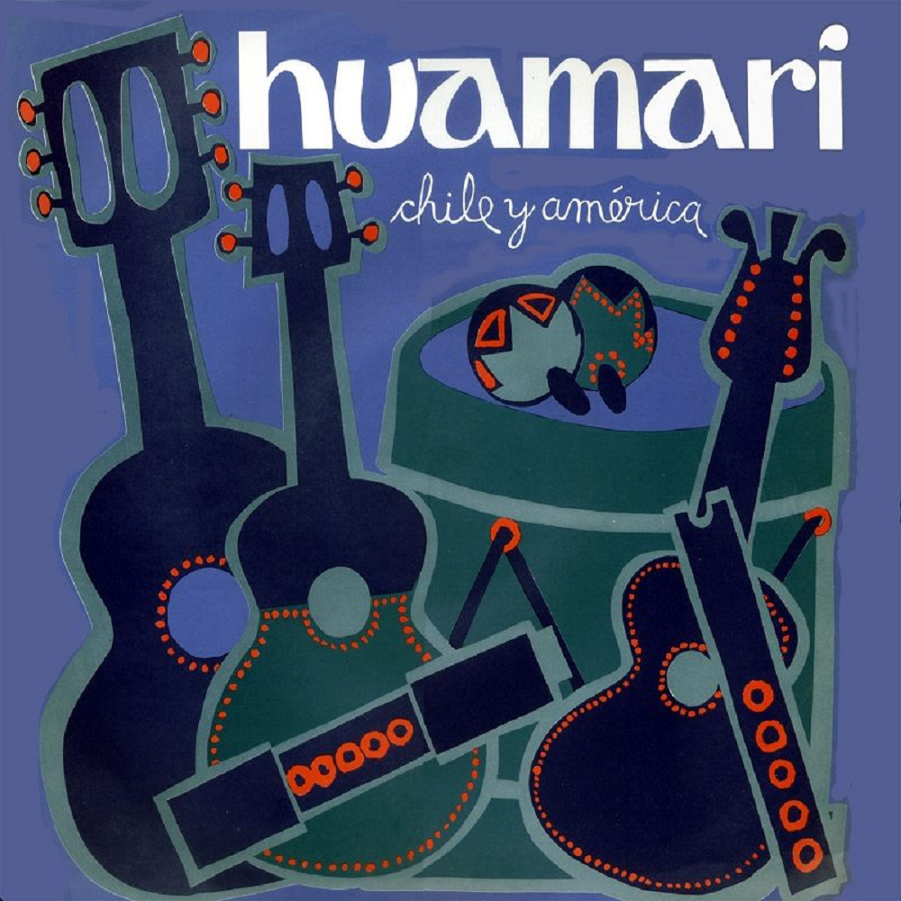

Huamari
Note 012
Home > Blog A Musician's Log > Note 012
Instrumental Language in Early Nueva Canción
Between 1971 and 1972, the Chilean ensemble Huamari released two albums: Chile y América (1971) and Oratorio de los trabajadores (1972). Their recorded output was brief, but it belongs to a decisive moment in the consolidation of the Nueva Canción movement in Chile.
Rather than retell the political history of the period, it is more revealing to examine Huamari's instrumental language: the instruments they selected, how those instruments were arranged, and what sonic image of "the Andes" their recordings helped stabilize. For Nueva Canción did not simply produce repertory. It consolidated an ensemble model.
By the early 1970s, a recognizable constellation had crystallized across Chilean, Argentinean, and Peruvian revival circuits: guitar, charango, quena, bombo legüero, occasionally zampoña. This configuration signaled Andean rootedness and political consciousness simultaneously. It was portable, visually legible, and acoustically distinctive.
Huamari worked squarely within this vocabulary. The significance lies in how that vocabulary functioned.
The Charango: From Local Instrument to Political Emblem
Historically associated with highland Bolivia and southern Peru, the charango is regionally diverse in construction, tuning, and repertoire. Rural instruments vary in body size, stringing, and modal logic. Tuning systems are not universally standardized.
In Nueva Canción contexts, however, the charango was frequently reconfigured into a harmonically stable, guitar-compatible instrument. Standardized tunings aligned it with Western chordal frameworks, allowing seamless integration into arranged ensemble textures.
In Huamari's recordings, the charango often reinforces harmonic rhythm rather than asserting melodic autonomy. It participates in chordal reinforcement, doubling guitar figures or supplying bright rhythmic shimmer beneath vocals.
The instrument does not disappear into symbolism. But it does shift function. It becomes an emblematic Andean timbre operating within urban harmonic grammar.
This transformation parallels what Rodrigo Torres has described as the "folklorization" and codification of Andean sonorities within Chilean popular music discourse.
Aerophones in a Tempered Frame
Quenas and zampoñas entered Nueva Canción as audible markers of Indigenous continuity. Yet in many staged and recorded settings, the structural logic of these aerophones was altered.
Traditional panpipe practice in the Andes frequently depends on interlocking performance (hocketing) among multiple players. In urban revival settings, single-performer configurations became common, eliminating the collective alternation central to rural forms.
When Huamari employs quena, the instrument frequently operates within harmonized song structures shaped by guitar and voice. Modal material is adjusted to fit tempered chord progressions. The aerophone's tonal environment is recalibrated to studio coherence.
This does not diminish its expressive charge. It does reveal adaptation: Indigenous aerophone timbre embedded within modern harmonic infrastructure.
Jan Fairley's work on Nueva Canción underscores how instrumentation functioned as ideological signifier as much as musical resource. The quena's presence invoked ancestry even when its modal grammar was partially absorbed into Western tonal frameworks.
The Bombo Legüero and Rhythmic Gravity
The bombo legüero, historically associated with Argentinean folkloric traditions, became a rhythmic anchor across the movement. Its low-frequency pulse conveyed weight and collective force.
In Huamari's arrangements, percussion tends toward standardized metric clarity rather than regionally specific rhythmic asymmetry. The bombo stabilizes tempo and reinforces ensemble cohesion. It rarely engages in complex rhythmic dialogue.
The result is intelligibility. Nueva Canción favored communicative clarity over local rhythmic particularism. Lyrics were foregrounded; instrumentation supported message delivery.
Thomas Turino's distinction between participatory and presentational performance frameworks is useful here. Nueva Canción recordings largely operate in presentational mode, even when drawing on participatory source materials. Instrumental standardization serves that shift.
Ensemble as Political Cartography
By the early 1970s, the ensemble itself had become semiotic. Charango signaled Andean indigeneity. Quena signaled ancestral continuity. Bombo signaled collective force. Guitar bridged urban and rural.
Huamari's instrumentation participates in this codification. The ensemble constructs a trans-Andean sonic horizon that exceeds Chilean regional specificity. Instruments drawn from Bolivia, Peru, and Argentina are assembled into a unified continental sound.
This canonization process inevitably flattened local instrumental ecologies. Chilean rural traditions — Mapuche aerophones such as the trutruka, central valley string practices, Chiloé's rabel traditions — rarely entered the standardized Nueva Canción ensemble.
The movement privileged a pan-Andean identity over regional heterogeneity.
Huamari does not document a locality. It participates in constructing a continental political soundscape.
Readings
- Fairley, Jan. Analysing Performance: Narrative and Ideology in Concerts by ¡Karaxú! Popular Music, 8 (1), 1989, pp. 1-30.
- González, Juan Pablo, Claudio Rolle, and Óscar Ohlsen. Historia social de la música popular en Chile, 1950-1970. Santiago de Chile: Ediciones Universidad Católica de Chile, 2009.
- Karmy, Eileen, and Martín Farías, eds. Palimpsestos sonoros: reflexiones sobre la Nueva Canción Chilena. Santiago de Chile: Ceibo Ediciones, 2014.
- Torres Alvarado, Rodrigo. Perfil de la creación musical en la Nueva Canción Chilena desde sus orígenes hasta 1973. Santiago: CENECA, 1980.
- Turino, Thomas. Music as Social Life: The Politics of Participation. Chicago: University of Chicago Press, 2008.
Video. From YouTube user Música Mágica.
Video. From YouTube user Desayuno Psicodélico.